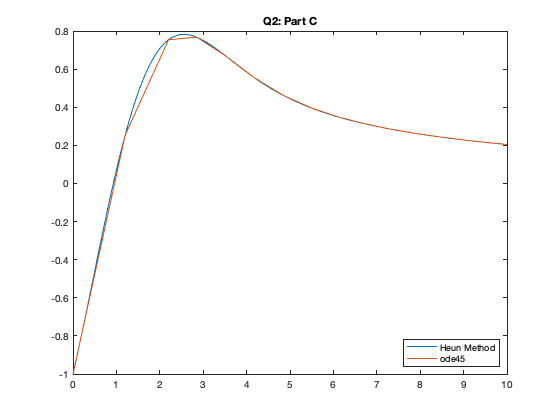
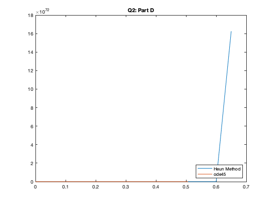
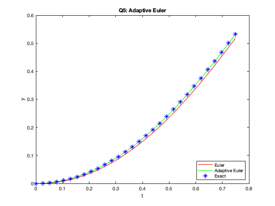
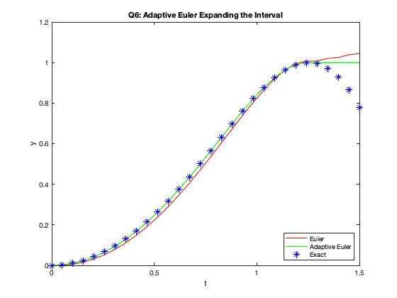

ODE Lab: Creating your own ODE solver in MATLAB
In this lab, you will write your own ODE solver for the Improved Euler method (also known as the Heun method), and compare its results to those of ode45.
You will also learn how to write a function in a separate m-file and execute it.
Opening the m-file lab3.m in the MATLAB editor, step through each part using cell mode to see the results. Compare the output with the PDF, which was generated from this m-file.
There are six (6) exercises in this lab that are to be handed in on the due date. Write your solutions in the template, including appropriate descriptions in each step. Save the .m files and submit them online on Quercus.
Contents
Student Information
Student Name: Adam Omarali
Student Number: 1010132866
Creating new functions using m-files.
Create a new function in a separate m-file:
Specifics: Create a text file with the file name f.m with the following lines of code (text):
function y = f(a,b,c) y = a+b+c;
Now MATLAB can call the new function f (which simply accepts 3 numbers and adds them together). To see how this works, type the following in the matlab command window: sum = f(1,2,3)
Exercise 1
Objective: Write your own ODE solver (using the Heun/Improved Euler Method).
Details: This m-file should be a function which accepts as variables (t0,tN,y0,h), where t0 and tN are the start and end points of the interval on which to solve the ODE, y0 is the initial condition of the ODE, and h is the stepsize. You may also want to pass the function into the ODE the way ode45 does (check lab 2).
Note: you will need to use a loop to do this exercise. You will also need to recall the Heun/Improved Euler algorithm learned in lectures.
Exercise 2
Objective: Compare Heun with ode45.
Specifics: For the following initial-value problems (from lab 2, exercises 1, 4-6), approximate the solutions with your function from exercise 1 (Improved Euler Method). Plot the graphs of your Improved Euler Approximation with the ode45 approximation.
(a) y' = y tan t + sin t, y(0) = -1/2 from t = 0 to t = pi
(b) y' = 1 / y^2 , y(1) = 1 from t=1 to t=10
(c) y' = 1 - t y / 2, y(0) = -1 from t=0 to t=10
(d) y' = y^3 - t^2, y(0) = 1 from t=0 to t=1
Comment on any major differences, or the lack thereof. You do not need to reproduce all the code here. Simply make note of any differences for each of the four IVPs.
h = 0.05; i = [0, pi]; y0 = -0.5; tvals = linspace(i(1), i(2), floor((i(2) - i(1)) / h) + 1); f = @(t, y) y * tan(t) + sin(t); sol = heun(f, i(1), i(2), y0, h); solode = ode45(f, [i(1), i(2)], y0); plot(tvals, sol, solode.x, solode.y) legend("Heun Method", "ode45", "Location", "southeast"); title("Q2: Part A"); %Not many differences. The Heun Method is sharp near the inflection point. The %ode45 solution is more pointy around the points where the derivative %approaches 0.
i = [1, 10]; y0 = 1; tvals = linspace(i(1), i(2), floor((i(2) - i(1)) / h) + 1); f = @(t, y) 1 / y^2; sol = heun(f, i(1), i(2), y0, h); solode = ode45(f, [i(1), i(2)], y0); plot(tvals, sol, solode.x, solode.y) legend("Heun Method", "ode45", "Location", "southeast"); title("Q2: Part B");
i = [0, 10]; y0 = -1; tvals = linspace(i(1), i(2), floor((i(2) - i(1)) / h) + 1); f = @(t, y) 1 - t*y / 2; sol = heun(f, i(1), i(2), y0, h); solode = ode45(f, [i(1), i(2)], y0); plot(tvals, sol, solode.x, solode.y) legend("Heun Method", "ode45", "Location", "southeast"); title("Q2: Part C"); %The Heun Method is smoother near the maximum than the ode45.
i = [0, 1]; y0 = 1; tvals = linspace(i(1), i(2), floor((i(2) - i(1)) / h) + 1); f = @(t, y) y^3 - t^2; sol = heun(f, i(1), i(2), y0, h); solode = ode45(f, [i(1), i(2)], y0); plot(tvals, sol, solode.x, solode.y) legend("Heun Method", "ode45", "Location", "southeast"); title("Q2: Part D"); %The Heun method diverges very quickly. %ode45 seems to be limited by its ability to integrate.
Warning: Failure at t=5.066046e-01. Unable to meet integration tolerances without reducing the step size below the smallest value allowed (1.776357e-15) at time t.
Exercise 3
Objective: Use Euler's method and verify an estimate for the global error.
Details:
(a) Use Euler's method (you can use euler.m from iode) to solve the IVP
y' = 2 t sqrt( 1 - y^2 ) , y(0) = 0
from t=0 to t=0.5.
f = @(t, y) 2 * t * sqrt(1-y^2); sol = euler(f, 0, linspace(0, 0.5, 50));
(b) Calculate the solution of the IVP and evaluate it at t=0.5.
exact = @(t) sin (t^2);
fprintf("y(0.5) = %g\n", exact(0.5));
y(0.5) = 0.247404
(c) Read the attached derivation of an estimate of the global error for Euler's method. Type out the resulting bound for En here in a comment. Define each variable.
%En <= ((1 + M) * delta t) / 2 * (e^(M * n * delta t) - 1) %En: Error of the nth term calculated by euler's method %M:the bound |f|, |d_tF|, |d_yF| %delta t: step size %n: the term number
(d) Compute the error estimate for t=0.5 and compare with the actual error.
e = exp(1); M = 2; %d_tF has the largest possible value of 2 delta_t = 0.5/50; n = 50; predicted_error = ((1 + M) * delta_t) / 2 * (e^(M * n * delta_t) - 1); actual_error = abs(sol(50) - sin(0.5^2)); fprintf("Bounded Error: %g\n", predicted_error); fprintf("Actual Error: %g\n", actual_error);
Bounded Error: 0.0257742 Actual Error: 0.00482867
(e) Change the time step and compare the new error estimate with the actual error. Comment on how it confirms the order of Euler's method.
delta_t = delta_t/2; sol = euler(f, 0, linspace(0, 0.5, 100)); predicted_error = ((1 + M) * delta_t) / 2 * (e^(M * n * delta_t) - 1); actual_error = abs(sol(50) - sin(0.5^2)); fprintf("New Bounded Error: %g\n", predicted_error); fprintf("Actual Error: %g\n", actual_error); %0.00486541 / 0.0257742 = 0.1888 %The early nearly halfs as the step size doubles %It doesn't perfectly half because delta_t is also in the exponential
New Bounded Error: 0.00486541 Actual Error: 0.187444
Adaptive Step Size
As mentioned in lab 2, the step size in ode45 is adapted to a specific error tolerance.
The idea of adaptive step size is to change the step size h to a smaller number whenever the derivative of the solution changes quickly. This is done by evaluating f(t,y) and checking how it changes from one iteration to the next.
Exercise 4
Objective: Create an Adaptive Euler method, with an adaptive step size h.
Details: Create an m-file which accepts the variables (t0,tN,y0,h), as in exercise 1, where h is an initial step size. You may also want to pass the function into the ODE the way ode45 does.
Create an implementation of Euler's method by modifying your solution to exercise 1. Change it to include the following:
(a) On each timestep, make two estimates of the value of the solution at the end of the timestep: Y from one Euler step of size h and Z from two successive Euler steps of size h/2. The difference in these two values is an estimate for the error.
(b) Let tol=1e-8 and D=Z-Y. If abs(D)<tol, declare the step to be successful and set the new solution value to be Z+D. This value has local error O(h^3). If abs(D)>=tol, reject this step and repeat it with a new step size, from (c).
(c) Update the step size as h = 0.9*h*min(max(tol/abs(D),0.3),2).
Comment on what the formula for updating the step size is attempting to achieve.
%%The update will try and change the step size by a maximum of 2 (increase) and %%minimum of 0.3 (decrease). If the actual error D is smaller than the tolerance, the %%estimate is good and the step size can increase to reduce the number of %%computations. The 0.9 coeffecient again reduces the step size so it doesn't increase too %%much, and cause the solution to diverge, leading to more corrective %%iterations.
Exercise 5
Objective: Compare Euler to your Adaptive Euler method.
Details: Consider the IVP from exercise 3.
(a) Use Euler method to approximate the solution from t=0 to t=0.75 with h=0.025.
f = @(t, y) 2 * t * sqrt(1-y^2); tvals = linspace(0, 0.75, 0.75 / 0.025); sol_euler = euler(f, 0, tvals);
(b) Use your Adaptive Euler method to approximate the solution from t=0 to t=0.75 with initial h=0.025.
[t, y] = euler_adaptive(f, 0, 0.75, 0, 0.025);
(c) Plot both approximations together with the exact solution.
exact = sin(tvals.^2); plot(tvals, sol_euler, "r", t, y, "g", tvals, exact, 'b*') legend("Euler", "Adaptive Euler", "Exact", "Location","southeast"); title("Q5: Adaptive Euler"); xlabel("t"); ylabel("y");
Exercise 6
Objective: Problems with Numerical Methods.
Details: Consider the IVP from exercise 3 (and 5).
(a) From the two approximations calculated in exercise 5, which one is closer to the actual solution (done in 3.b)? Explain why.
%From the graph, it's clear the adaptive euler method is much closer to the %actual solution. This is because every y-value determined must fall within %a certain tolerance for the adaptive method. This ensures the solution %does not begin to diverge at some point, preventing long term effects on the %solution.
(b) Plot the exact solution (from exercise 3.b), the Euler's approximation (from exercise 3.a) and the adaptive Euler's approximation (from exercise 5) from t=0 to t=1.5.
t0 = 0; tf = 1.5; h = 0.025; tvals = linspace(t0, tf, 0.75 / h); sol_euler = euler(f, 0, tvals); [t, y] = euler_adaptive(f, t0, tf, 0, h); exact = sin(tvals.^2); plot(tvals, sol_euler, "r", t, y, "g", tvals, exact, 'b*') legend("Euler", "Adaptive Euler", "Exact", "Location","southeast"); title("Q6: Adaptive Euler Expanding the Interval"); xlabel("t"); ylabel("y");
Warning: Imaginary parts of complex X and/or Y arguments ignored.
(c) Notice how the exact solution and the approximations become very different. Why is that? Write your answer as a comment.
%%The adaptive approximation flattens out after the maximum, while the %%euler method rises and continues to diverge. This is due to the %%differential equation. y can not be > 1, otherwise the square root term %%will be imaginary. Since t is always increase on the interval and the y %%term will always be positive, the approximation will never decrease. In %%addition, for the adaptive method, since the slope is 0 at its maximum, %%D is also approximately 0, meaning the step size update will try to %%increase.
Functions used in other files.
function y = heun(f, t0, tN, y0, h) N = floor((tN - t0) ./ h); %N is the number of iterations. Don't use int32, conflicts with tan y = zeros(1, N); y(1) = y0; for i=1:N curr_slope = f(t0 + h * (i - 1), y(i)); next_slope = f(t0 + h * (i), y(i) + h * curr_slope); y(i + 1) = y(i) + h / 2 * (curr_slope + next_slope); end end function xc=euler(fs,x0,tc); % function xc=euler(fs,x0,tc); % % (c) 2001, Peter Brinkmann (brinkman@math.uiuc.edu) % % euler: computes numerical solutions of initial value problems of the form % dx/dt=f(t,x), x(t0)=x0 (where t0=tc(1)) % using Euler's method. x and f can be scalars or vertical vectors of the % same dimension. % % Usage example: % xc=euler(inline('x.*y','x','y'), 2.5, 0:0.01:1) % % Parameters: % fs: an inline function f(t,x) or string containing the % name of a function of (t,x) % (see .octaverc for the implementation of inline functions under % Octave) % The function given by fs must be of the form f(t,x) and return % the value of f when evaluated at (t,x). The function should be % able to deal with vector input, i.e., the code should use the % vectorized operators .*, ./, etc., instead of *, /, etc. A string % that may contain nonvectorized operators can be fed through the % function vectorize in order to achieve this. % x0: initial coordinate (or vector of initial coordinates; the dimension % of x0 must match the dimension of the values computed by fs); % tc: a row vector of t-coordinates, indexed from 1 % % Returns: % xc: row vector of x-coordinates of the solution, indexed from 1 % (or a matrix of coordinates when solving a system of % differential equations) % % Notes on indexing: % matlab and octave start indexing arrays from 1, and so the initial % element of the array xc is xc(1). This is unfortunate because people % usually denote the initial x-value for the differential equation by x0, % so that x0=xc(1). % This program is free software; you can redistribute it and/or modify % it under the terms of the GNU General Public License as published by % the Free Software Foundation (http://www.gnu.org/copyleft/gpl.html). x=x0; xc=[x0]; % so that xc(1)=x0 for i=1:(length(tc)-1) h=tc(i+1)-tc(i); k1=feval(fs,tc(i),x); x=x+h*k1; xc=[xc,x]; end; end function [T, Y] = euler_adaptive(f, t0, tN, y0, h) N = floor((tN - t0) ./ h); %N is the number of iterations. Don't use int32, conflicts with tan tol=1e-8; y = y0; t = t0; T = t0; Y = y0; while t < tN if t + h > tN h = tN - t; % Adjust step size for the last step end y_onestep = y + h * f(t, y); y_halfstep_1 = y + h / 2 * f(t, y); z = y_halfstep_1 + h / 2 * f(t + h/2, y_halfstep_1); D = z - y_onestep; if abs(D) < tol t = t + h; y = z + D; T = [T, t]; Y = [Y, y]; end h = 0.9*h*min(max(tol/abs(D),0.3),2); end end